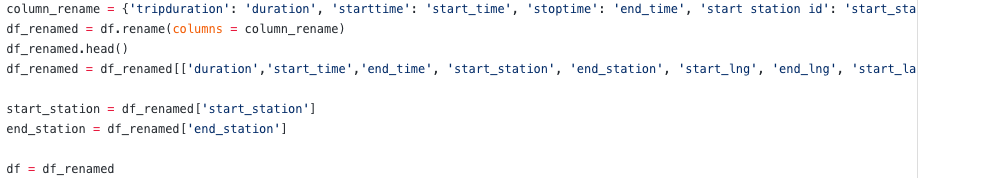
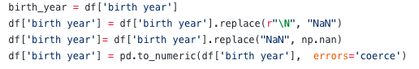

Processor of Normalizing the dataset¶
In my past journals, I talked about the normalizing both datasets to do the data visualization after that. Today, I will talk about my process of normalizing my New York bikeshare dataset step by step.
After reading my data from pandas, I renamed all the columns with lowercase characters.

By reading the data file, I also decided to changes the data types of the birth year and tripduration columns. I then use np.nan to deal with the missing data (turning N/As to NaN)
Birth year column: In this column, I replaced \N with NaN. At the first time, I have a trouble with this replacement because my code cannot define \N. I then tried to figure out the way to deal with this problem. I finally found out that I just had to edit my code a little bit. I just had to replace r”\N” with “NaN” instead of replacing “\N” with “NaN”. My last step was to change the column type from object to float. Here below is my code for this part.

In the last columns (trip duration, gender, usertype), I converted all the information from seconds to minutes (trip duration), changed gender column from integer to string, and replaced “0, 1, 2” with “Unknown, Male, Female”, and also replaced the userype column from “Subcriber, Customer” to “Member, Non-member”. Here below is my code for this normalization.